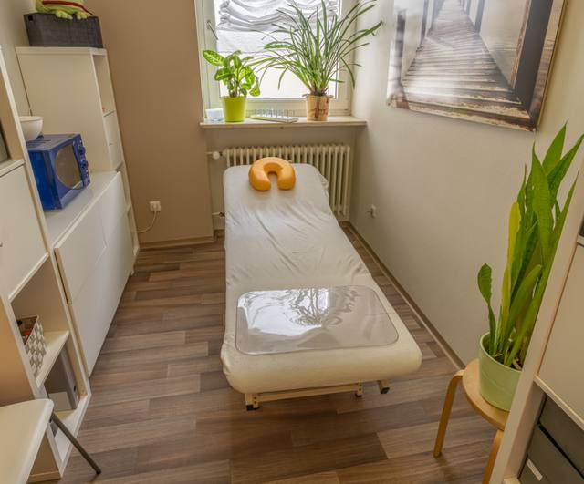
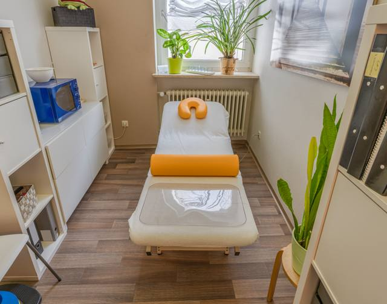
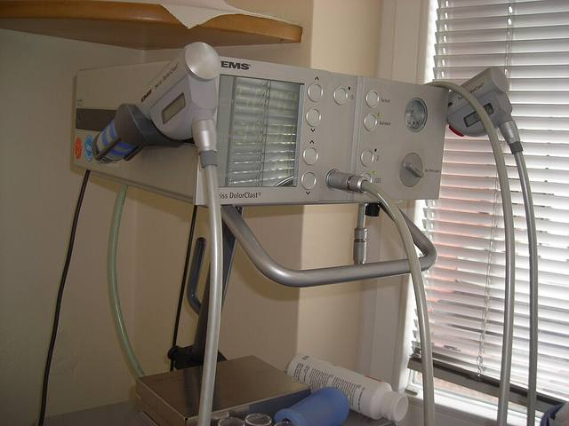
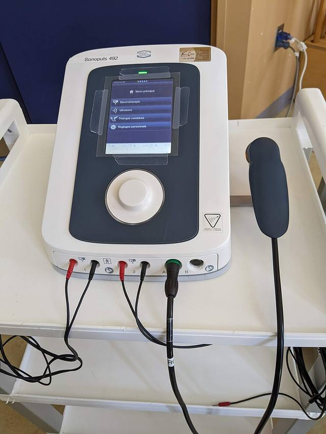
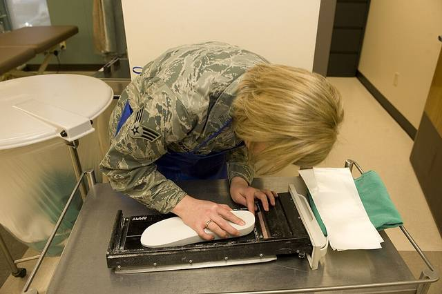
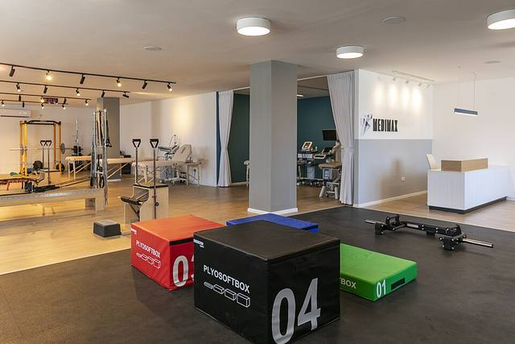
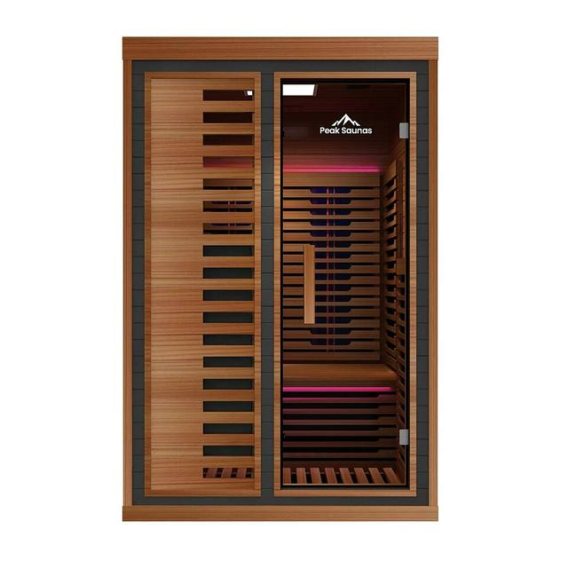

Rawatan
Rawatan saraf
Professional Nerve Treatment
Klinik fisioterapi dan pemulihan di S2 Heights, Seremban — berkhidmat sejak 2017.

Gambar hiasan · PantheraLeo1359531 · CC BY 4.0Servis
Senarai servis daripada profil klinik sendiri. Kesesuaian setiap rawatan ditentukan selepas penilaian oleh ahli fisioterapi.
Menunjukkan 8 servis
Professional Nerve Treatment

PantheraLeo1359531 · CC BY 4.0Spine Decompression & Traction Therapy — servikal (leher) & lumbar (pinggang)

User:Mattes · CC BY-SA 3.0Electrotherapy & Shockwave Therapy

Simon Villeneuve · CC BY-SA 4.0Laser Therapy & Therapeutic Ultrasound

Airman 1st Class Anania Tekurio · domain awam3D Foot Scan & Orthotics Support

Hilahalumit · CC BY-SA 4.0Post-Surgical & Neurological Rehabilitation
Visiting Doctor & Specialist Consultations

Peak Saunas · CC0Disebut dalam hantaran promosi klinik
Akan disahkan oleh pemilikHarga setiap servis akan disahkan oleh pemilik
Sesi pertama
Aliran sesi diambil daripada hantaran promosi klinik — akan disahkan oleh pemilik
#mythorfact
Topik yang pernah dikongsi klinik di Instagram. Laman sebenar boleh memuatkan penjelasan penuh klinik.
Klinik membincangkan salah faham umum tentang rehat dan pergerakan.
Dua istilah yang sering dikelirukan.
Penerangan ringkas tentang sakit yang menjalar.
Maklumat umum sahaja, bukan nasihat perubatan. Dapatkan penilaian daripada profesional kesihatan berdaftar.
Waktu operasi
| Isnin – Jumaat | 9:00 pagi – 6:00 petang |
| Sabtu | 8:00 pagi – 4:00 petang Sumber berbeza (9–6) — akan disahkan oleh pemilik |
| Ahad & cuti umum | Akan disahkan oleh pemilik |
Lokasi
Jalan Pusat Komersial Saujana 1, S2 Heights, Seremban, Negeri Sembilan.
Pin peta, parkir & akses akan disahkan oleh pemilik
Pasukan klinik: akan disahkan oleh pemilik